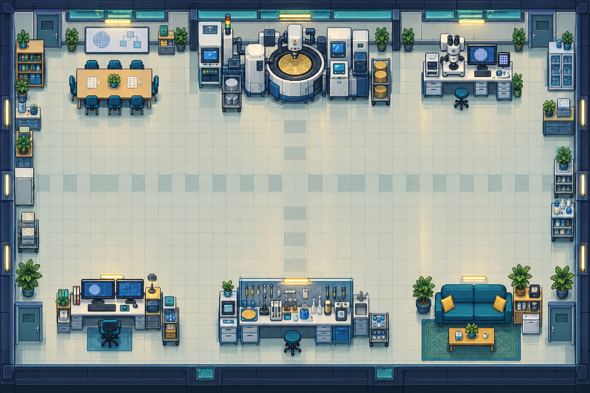

◈
晶圆厂日记
FAB DAYS
今天，也向工程师前进一步。
▤ 调查手帐
? 玩法
日本語
实操模式
经典训练
研修第 1 周
DAY 01
行动时钟
08:30
早班
专注力
100 / 100
见习工程师
0
XP
第一研修中心
简化教学地图
中央通道

你
早上好，新人！
点击「晨会」走过去，见见林前辈。
W A S D
或方向键移动
E
交互
↑
←
↓
→
走近工作站
工作记录
08:30 来到研修中心，准备参加晨会。
×